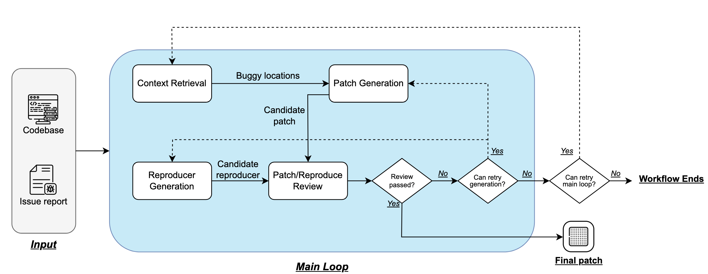

CodeRover-S
Fixing Security Vulnerabilities with AI in OSS-Fuzz
The OSS-Fuzz project
Fuzz testing is a popular method for detecting software security vulnerabilities. Launched by Google in 2016, OSS-Fuzz is an open-source initiative designed to continuously detect security vulnerabilities across more than 1250 open-source software projects. The participating projects provide a fuzzing harness to test specific API functions. OSS-Fuzz monitors the reliability of software projects's repositories by continuously testing them with a wide range of fuzzers (e.g. AFL++) and sanitizers . It automatically reports any crashes identified by the fuzzers and periodically verifies whether the project has resolved the reported issues. As of September 2024, the OSS-Fuzz cluster has discovered over 12,000 bugs across all projects. Currently OSS-Fuzz is the most significant and widely used infrastructure for continuous validation of open source systems.
Unfortunately even though OSS-Fuzz has identified more than 10,000 vulnerabilities across 1000 or more software projects, the detected vulnerabilities may remain
unpatched, as vulnerability fixing is often manual in practice.

Overview of CodeRover-S
In this work, we rely on the recent progress in Large Language Model (LLM) agents for autonomous program improvement including bug fixing. This is also the first such study with large-scale vulnerability fixing on real projects to the best of our knowledge. We customise the well-known AutoCodeRover agent for fixing security vulnerabilities. This is because LLM agents like AutoCodeRover fix bugs from issue descriptions, via code search. Instead for security patching, we rely on the test execution of the exploit input to extract code elements relevant to the fix. Our experience with the vulnerability data from OSS-Fuzz leads us to many observations. We note that having autonomy in the LLM agent is useful for successful security patching, as opposed to approaches like Agentless where the control flow is fixed. More importantly our findings show that we cannot measure quality of patches by code similarity of the patch with reference codes, since patches with high CodeBLEU scores still fail to pass given the given exploit input. 